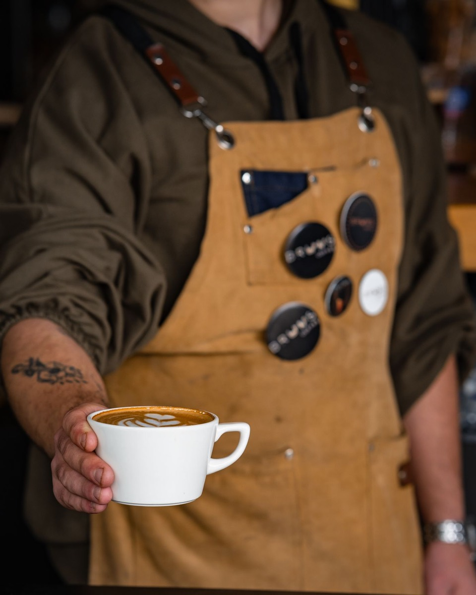
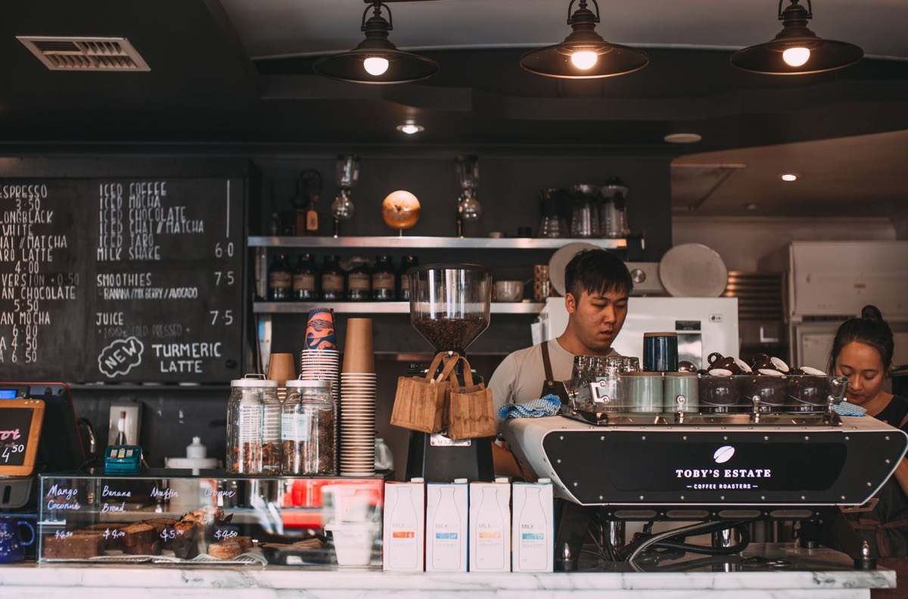

AbertoTerça a domingo, das 7h às 19h. Segunda a gente torra.
GrãoDa Chapada Diamantina, comprado direto do sítio e torrado aqui toda quinta.

PIATÃ, BA
Natural, torra média. Rapadura e laranja-cravo. R$ 9 a xícara.
Uma esquina no centro de Aracaju, com seis mesas e um balcão de frente pra máquina. Dá pra prender a bicicleta na porta.